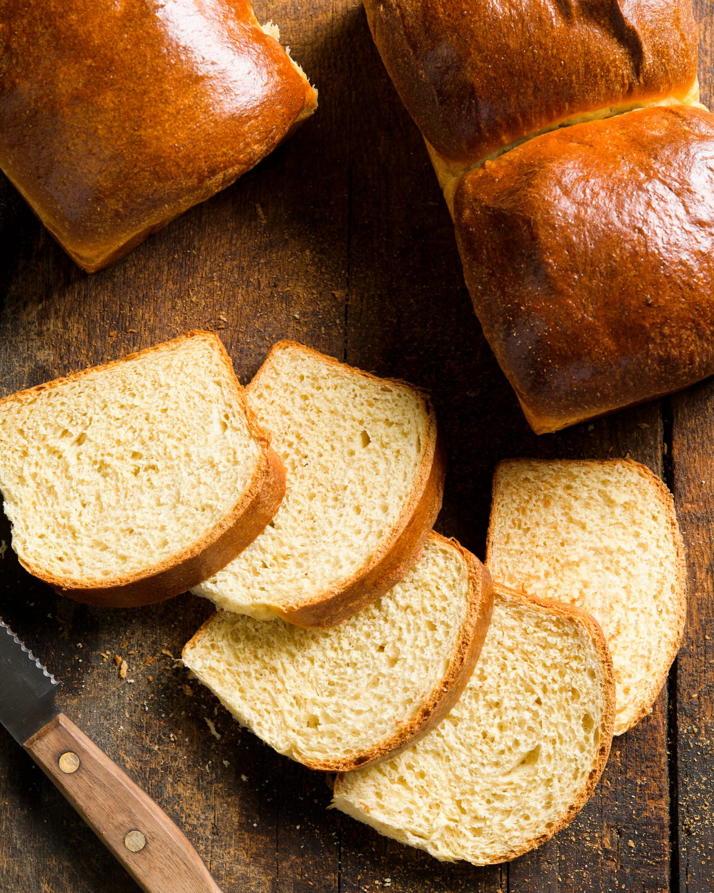

Japanese milk bread, also known as "Hokkaido milk bread" or "shokupan," is a soft and fluffy white bread that is popular in Japan. It has a slightly sweet flavor and a tender crumb, making it a favorite for sandwiches and toast. The key to its unique texture is the use of a method called tangzhong, where a portion of the flour is cooked with water or milk into a thick, roux-like paste before being incorporated into the dough.
Meal prep time : 4 hours
Servings : 16